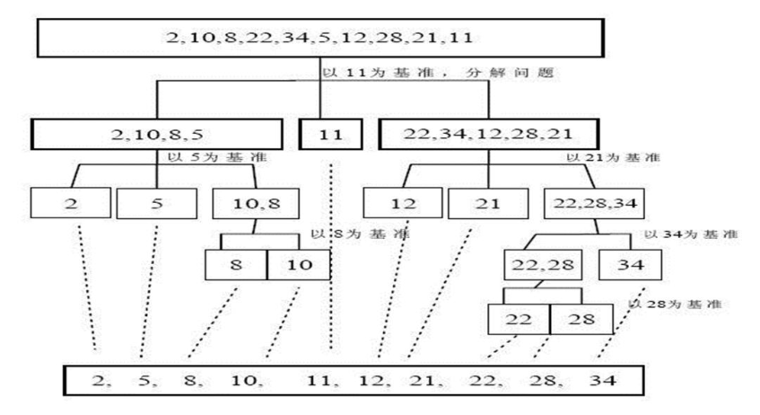

快速排序法介绍:
快速排序（Quicksort）是对 冒泡排序的一种改进。基本思想是：通过一趟排序将要排序的数据分割成独立的两
部分，其中一部分的所有数据都比另外一部分的所有数据都要小，然后再按此方法对这两部分数据分别进行快速排
序， 整个排序过程可以递归进行，以此达到整个数据变成有序序列。
快速排序法示意图:

实现思路
- 定义两个指针 分别指向传进来的左右两个位置
- 定义中间的基准数，下面会按照这个基准数进行排序
- 从左侧一直往基准数的位置找，直到有一个数大于或者等于基准数停止，同样 右侧一直找到一个小于等于基准数的位置。
- 判断一下这两个指针指向的位置是否相等，若相等则表示 此时基准数左边 和右边 已经排序完成了
- 若不等，则将找到的两个位置的数进行交换
- 交换后判断换好的的 两个数 是否等于基准数，若左侧等于基准数 则r- - ，反之 若右侧的数等于基准数 则 l++。
- 至此 一轮比较结束，但要判断一下 两个指针是否相等，若相等，将两个指针分别往前移动一位。
- 左侧和右侧分别开始递归，左侧是 left—–r 右侧是 l—–right
- 排序完成
代码
1 | public class QuickSort { |
8000000条数据 1 秒